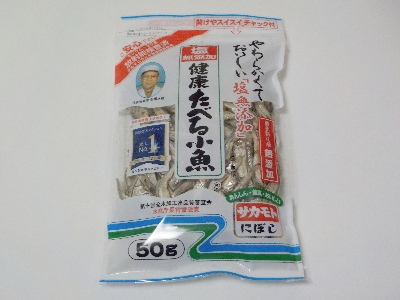
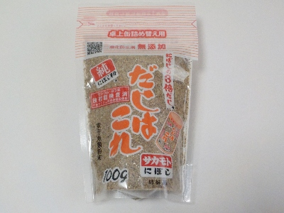

サカモトの健康たべる小魚。
2024/05/02

放射能検査済って書いてあるとなんか引きますね。小魚って検査対象になってるんだ。
この商品は食べる小魚としてはちょっと大きい感じがしますが、サクサクでやわらかいので食べ易かったです。
なにかのランキングでナンバーワンと書いてありますが、なんか納得です。
愛知県名古屋市守山区喜多山二丁目28番6号
2024/05/02

放射能検査済って書いてあるとなんか引きますね。小魚って検査対象になってるんだ。
この商品は食べる小魚としてはちょっと大きい感じがしますが、サクサクでやわらかいので食べ易かったです。
なにかのランキングでナンバーワンと書いてありますが、なんか納得です。
2024/05/01

原材料がマイワシ、カタクチイワシ、食塩です。大きい会社の商品には美味しくするために色々はいっていますが、これはシンプルです。
自分の欲しいと思ったモノだけの方が、料理に使い易いので好きです。